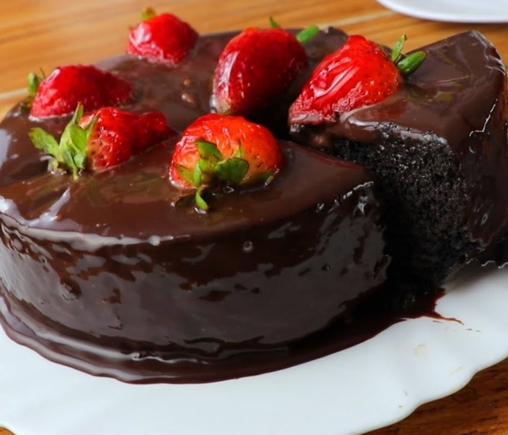

Pastel de chocolate

Ingredientes
- 1 1/2 Barras de Mantequilla a temperatura ambiente (90 g c/u)
- 1 Lata de Leche Condensada LA LECHERA
- 3 Huevos
- 1 1/2 Tazas de Harina de trigo
- 1 Cucharadita de Polvo para hornear
- 1 1/2 Barras de Chocolate semiamargo fundido (150 g c/u)
- 3 Envases de Media Crema NESTLE (190 g c/u)
- 3 Barras de Chocolate semiamargo en trozos (150 g c/u)
Cómo hacer pastel de chocolate:
- Horno precalentado a 180 °C.
- Para el pastel, acrema la mantequilla; agrega la Leche Condensada LA LECHERA®, los huevos, la harina, el polvo para hornear y 1 ½ barras de chocolate fundido. Vierte la preparación en un molde para pastel previamente engrasado y enharinado y llena hasta ¾ partes, hornea a 180 °C por 30 a 40 minutos o hasta que al introducir un palillo salga limpio. Retira del horno y deja enfriar.
- Para el betún, calienta la Media Crema NESTLÉ® y las 3 barras de chocolate picado hasta que se funda; retira del fuego y refrigera 2 horas o hasta que esté firme. Bate el betún en una batidora y reserva.
- Desmolda el pastel y corta en tres capas. Coloca un poco de betún en la base, una tapa de pastel, betún y la parte restante de pastel; cubre el pastel con el resto del betún, refrigera por 30 minutos y ofrece.